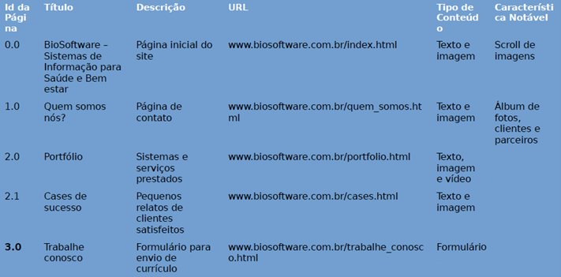

Criação de Conteúdo na Web
Profº Antônio Fiamenghi Neto
• Objetivo do curso:
Criar conteúdos para páginas da Internet com o objetivo da abordagem centrada no usuário. Reconhecer e observar métodos e etiqueta de comunicação interpessoal na utilização de email, mensagens instantâneas, fóruns, Blogs, Chats, podcasts etc. Planejar um projeto de escrita simples com a definição do público-alvo e respectivo nível de leitura. Desenvolver marca apropriada para interface e rótulos de navegação. Marcar semanticamente páginas de conteúdo. Rever conteúdos para aumentar a clareza, refinar propósito e assegurar a coerência de voz, tom e estilo.
Planejamento:
1. Auditoria
2. Análise
3. Estratégia
O que é auditoria?
Processo de exame e validação de um sistema, atividade ou informação. Uma auditoria de conteúdo da Web é uma consideração completa do conteúdo que sua organização possui online atualmente. Halvorson, 2010, pág. 45
Caso a organização ainda não tenha conteúdo online, o conteúdo offline, isto é, o conteúdo impresso (cartazes, manuais, folhetos etc) deve ser considerado.
Vantagens da Auditoria:
• Ajudá-lo a limitar a abrangência e até mesmo o orçamento para um projeto de conteúdo.
• Oferecer uma compreensão clara do que você possui e onde isso se encontra, mesmo que apenas para começar a pensar sobre a manutenção ou remoção de conteúdo. Halvorson, 2010, pág. 46 Inventário de Conteúdo
• O inventário de conteúdo é um processo e não um fim, ou seja, catalogar o seu conteúdo de acordo com um ou mais critérios, é uma atividade que deve ser considerada sempre, pois o conteúdo possui vida própria e, uma vez publicado, ele gera novos conteúdos que precisam ser devidamente inventariados. Exemplo de inventário de conteúdo:

Auditoria Qualitativa:
“Uma auditoria qualitativa analisa a qualidade e a eficiência do conteúdo” Halvorson, 2010, pág. 52. Desta análise será possível obter uma visão clara do conteúdo, isto é, se ele é útil e aproveitável em relação a sua audiência.
Auditoria especializada:
• A auditoria especializada visa reunir informações específicas e fundamentais para o sucesso do seu conteúdo e do negócio, tais como questões de 'encontrabilidade', metadados e geolocalização.
Auditoria de localização:
• Se o seu site atende pessoas de diversos locais do mundo, é necessário ficar atento à duas questões:
• Tradução: tradução é um processo complexo e exige profissionais capacitados, pois é impossível traduzir algum texto de uma língua para outra “ao pé da letra”. Tome cuidado com expressões, símbolos e outros aspectos, pois é bem possível que desagrade uma audiência específica.
• Indicadores culturais: imagens, vídeos, testemunhos, símbolos, estudos de caso e outros elementos devem ser adaptados de acordo com o público.
SEO: O conteúdo é localizável?
– Questões de 'encontrabilidade': as palavras-chave estão funcionando nos mecanismos de busca? A estrutura dos títulos, subtítulos e descrições do conteúdo obedecem as melhores práticas?
• Adicione uma coluna em seu inventário para listar as palavras-chave da página e se o seu uso é apropriado.
Depois da auditoria...
• A auditoria é apenas o primeiro passo da Estratégia de Conteúdo, porém, é o mais importante, pois é através desta atividade que você conseguirá ter uma visão geral do conteúdo online, como ele está estruturado, onde ele está armazenado, quem é sua audiência e, principalmente, sua utilidade.
• Aquele conteúdo que for identificado como sendo ruim ou inútil para os objetivos do negócio e/ou para os objetivos do usuário, deverá ser descartado e/ou retirado do ar imediatamente. Não perca tempo, o próximo passo será fazer uma Análise detalhada do conteúdo auditado.
Referências:
Instituto de Arquitetura de Informação. O que é arquitetura de informação? Disponível Aqui.
Google. Otimização de sites para Mecanismos de Pesquisa (SEO) – Guia do Google para iniciantes. Disponível Aqui.